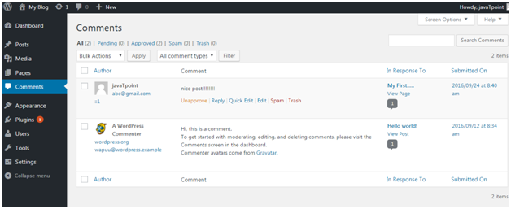
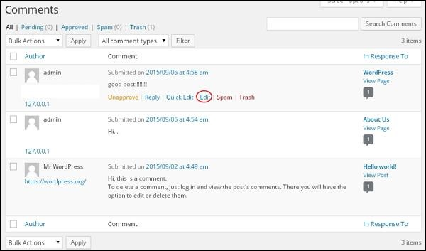
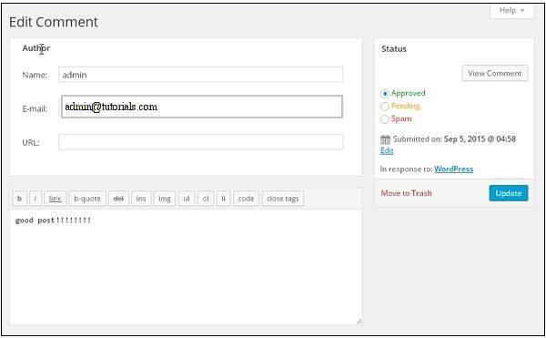

WordPress Comments
DASHBOARD >> COMMENTS
WordPress Comment
Comments are a way to allow your visitors to engage your website. Many site owners grow their outreach through commenting. Comments are generally allowed on the bottom of posts and can be nested many levels deep. You can activate or deactivate comment box. Comments are by default enabled.
Few things about Media Library
- Comments can be turned on or off If your site is a site that doesn’t need to take user comments, then you can turn them off altogether on your site.
- Reduce Spam comments by using plugins Certain spam comments can be reduced through the use of plugins such as Akismet. The use of recaptchas also help deter spammy comments on your site
- Comments can be handled by external applications You can allow applications such as Jetpack and Disqus to handle comments for your site. It takes the load off of your hosting.
On Clicking Comment option, Your WordPress theme dashboard screen will look something like this:
Comments can be in various states :
- Pending Pending comments are those that are waiting to be approved, classified as spam, or deleted. They don’t show up on the front end of your site.
- Approved Approved comments are those that you have deemed acceptable to be viewed publicly on the front end of your site.
- Spam Spam comments are those that have been flagged by WordPress for some reason or another, (too many outgoing links for example, or certain keywords) Spam comments are classified that way until approved, or trashed.
- Trash Comments that are sent here are not seen on the site until you remove them from the trash and approve them. You can empty the trash which will permanently delete the comment from your WordPress database.
Edit Comment
You can view the comments list for the various pages. Select any comment, you want to edit. Click on edit.
The Edit comment page gets displayed. You can edit the comment and click on Update Button.
Here you can edit the name, e-mail, URL or the comment from the comment box.